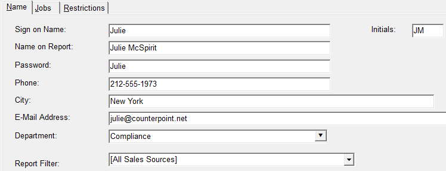

Name Tab
The Name tab is used to define basic information about the user.

Name Field Descriptions
- Sign on Name: the name they will use to login to the Affiliate System.
- Name on Report: will appear on printed reports generated by this user.
- Password: is the password they will use to enter the Affiliate System. The administrator cannot enter or see any user passwords. The field must initially be left blank when entering a new user. When a new user logs in for the first time, the user will be able to enter their password at that time. If a user forgets their password, the administrator must erase the password using the Erase button as the password will not be visible, then the user will be able to enter a new password when they sign on to the system.
- Initials: will appear in the Affiliate Management Comment Screen next to a comment to indicate who entered the Comment.
- Phone, City, Email Address: can be used to enter the user’s phone, city, and email address.
Creating and Assigning Users to Departments
Creating a New Department
You can classify each of your users as belonging to a network department. Users can be sorted by departments on reports, and emailed by department through the Station Email screen.
These Departments will also be used in the Filter feature in the Affiliate Management screen. Compliance and Sales will also appear in the Station Screen and the Agreement Screen.
To create a new department, click in the Department dropdown, select New, and press tab.
Enter the name of the new department in the Department Name field.
Each department is associated with a color that will appear throughout the system. To choose the color that will be associated with the new department, click the Select Color button.
You can choose additional colors by clicking on the Define Custom Colors button.
You can change the color associated with an existing department by selecting the existing department’s name, clicking on the Select Color button, and choosing a new color. Doing so will replace the previous color everywhere in the system.
Finally, indicate what type of department is by clicking on either Market Rep (Sales), Service Rep (Compliance and Affiliate Services), or Other, and click Save.
Adding a User to a Department
You can add a new or existing User to a department by selecting the appropriate department from the Department dropdown.
Report Filter
Every spot in the system is associated with a Sales Source that is defined in the Traffic system. Each Affiliate user can be assigned to one sales source, or All Sales Sources. When assigned, reports will be filtered to only show spot information pertaining to that (or all) sales sources.
The information that a user can view on reports, in the Affiliate Management screen, and in the Affiliate Affidavits screen can be controlled by assigning that user to a particular sales source. The information a user can view in other areas of the system can be controlled by limiting their access to different screens within the system.